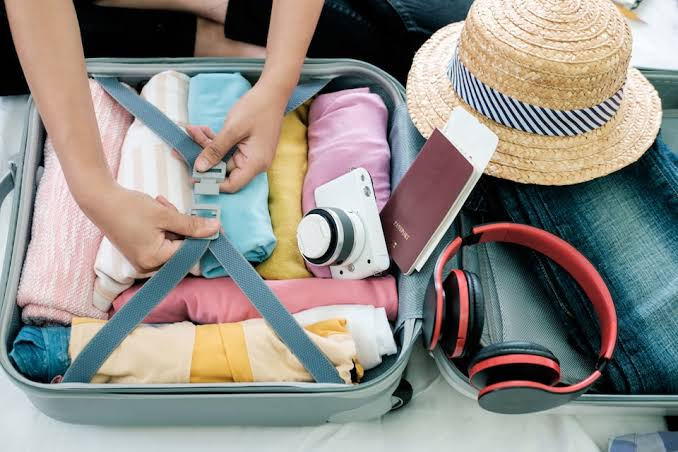

Tips para viajar
-Traza una ruta, escribir los lugares que quieres conocer y investiga sus atractivos turísticos: Siempre se debe partir de algún punto, aunque no necesariamente tienes que saber a dónde vas a llegar. Cuando viajas por tu propia cuenta, estás más abierto a dejarte sorprender por lo que te rodea, serás privilegiado por observar cosas que nadie más ha visto.
-Lleva contigo un mapa o guía para saber más del lugar que estás visitando: Generalmente en cada destino encontrarás un punto de atención a turistas en donde te informarán todo lo relacionado a ese lugar, las facilidades para moverte y los planes imperdibles que podrás realizar.
- No viajes con artículos o equipos caros: No necesitas viajar ropa mas cara o de marca, ni llevar cosas de valor u otros productos de precio alto. puede ser en algunos lugares te roben. Cuando viajas, a nadie le importa tu imagen. Es mejor relajarse e ir cómodo y gastarte el dinero en cosas que te hagan disfrutar del viaje.
-Elige bien en dónde te quedarás: Aspectos como la cercanía, seguridad y accesibilidad son los que debes de considerar para este punto. Es importante elegir muy bien el lugar en el que te vas a quedar a dormir, para descansar y poder disfrutar tanto de día como de noche.
-Organiza tu equipaje: Dependiendo del destino que dediciste conocer, deberás preprar una lista de tu equipaje; como ropa, bloqueadores, repelentes, casas de campaña, binoculares, entre muchos accesorios más. Además de lo necesario para traer recuerdo para toda la vida como cámaras fotográficas, cargadores. Recuerda que tambien sean cosas realmente necesarios para asi tener un viaje comodo.
-Usa mapas: Si vas a viajar con un dispositivo iOS o Android, nunca tendrás que preocuparte por perderte de nuevo. Esto es porque Google permite que los usuarios de Android e iOS guarden los mapas fuera de línea para poder acceder a ellos sin necesidad de conectarse a Internet (di adiós a las costosas tarifas de roaming). -Empieza a hacer contactos: Si vas a viajar por tu cuenta, pero no quieres necesariamente pasar sin compañía todas las vacaciones, empieza a hacer contactos antes de partir. Deja que conozca tu itinerario tanta gente como sea posible empezando un blog de viaje y ponte en contacto con tus amigos o los amigos de tus amigos en Facebook o Instagram. Una vez más, la mayoría de la gente compartirá consejos e información y se pondrán de acuerdo contigo para tomar un café si están cerca.